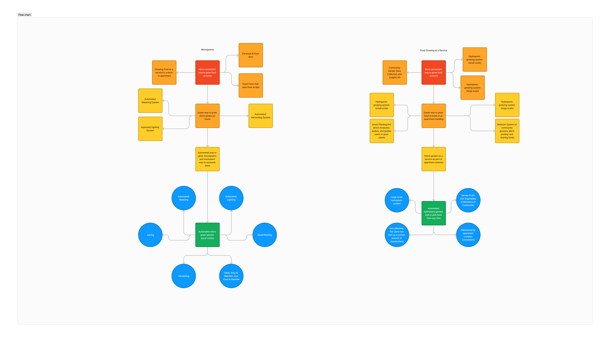

MECN 5055 Advanced Product Design
Focused on growing microgreens in a convenient, automated, clean, and compact manner. Microgreens are fast growing (5-7 days) and packed with micronutrients. Providing simple and cheap access to growing and consuming these nutritious foods will help address the large nutrient deficiency that college students have.
Target Audience: Urban residents and college students who lack access to outdoor growing areas. The group we have chosen that fits this description best is busy college students.
Need Statement: Busy college students need access to cheap and simple foods that are nutrient dense so that they can address the issue of micronutrient deficiencies.
“Studies show that about 59% of American college students are nutrient deficient.” - The College Puzzle, Stanford University
Consistently eating healthy foods is time consuming, expensive, and overwhelming for busy college students who are learning to provide food for themselves. This leads many students to end up with nutrient deficiencies that are negatively affecting their health, productivity, and happiness.
What is important to College Students? Convenience, Low Cost, Easy to Operate and Maintain, Not Time Consuming.
Our product will have to provide simple, affordable, and fun access to nutritious foods like microgreens.
Criteria for Success:
Pros:
Cons:
Pros:
Cons:
Pros:
Cons:
Pros:
Cons:
Using personas in the ideation process is essential for developing products that meet the specific needs and challenges of our target users. By focusing on the unique backgrounds, goals, and obstacles of each persona, we can brainstorm solutions that are not only innovative but also deeply resonant with our audience. This user-centered approach ensures our product design and development are guided by real-world use cases, enhancing usability and satisfaction.
Below is a concept map that visualizes the connections between our personas' needs, the product features designed to meet those needs, and the broader impact on their lifestyle. This map serves as a foundation for our ideation process, helping us to explore and refine our ideas comprehensively.
Age & Study: 22, Environmental Science Senior
Need: Seeks affordable ways to enrich her diet with essential nutrients in a small living space.
Goal: To sustain a healthier lifestyle with minimal cost and effort.
Challenge: Limited time for complex food preparations and lack of nutritional knowledge.
Age & Study: 20, Mechanical Engineering Junior
Need: Needs a straightforward, minimal-effort approach to integrate more vitamins and minerals into his diet.
Goal: To maintain a balanced diet despite a packed schedule.
Challenge: Scarcity of time and dorm living constraints.
Age & Study: 21, Fine Arts Senior
Need: Looks for sustainable and visually appealing methods to add more variety and nutrients to her vegetarian diet.
Goal: To live a waste-free, healthy lifestyle that also satisfies her aesthetic values.
Challenge: Finding a solution that is both eco-friendly and fits her artistic environment on a budget.
The Microgreen Garden and Juicer Combo emerges as the leading concept for several reasons:
This combination of convenience, speed, and automation makes the Microgreen Garden and Juicer Combo an ideal solution for anyone looking to enhance their diet with minimal effort.
Stay tuned for updates on our pretotyping efforts and discoveries. This section will be updated by February 16th with more details on our progress and insights gained from the pretotyping process.